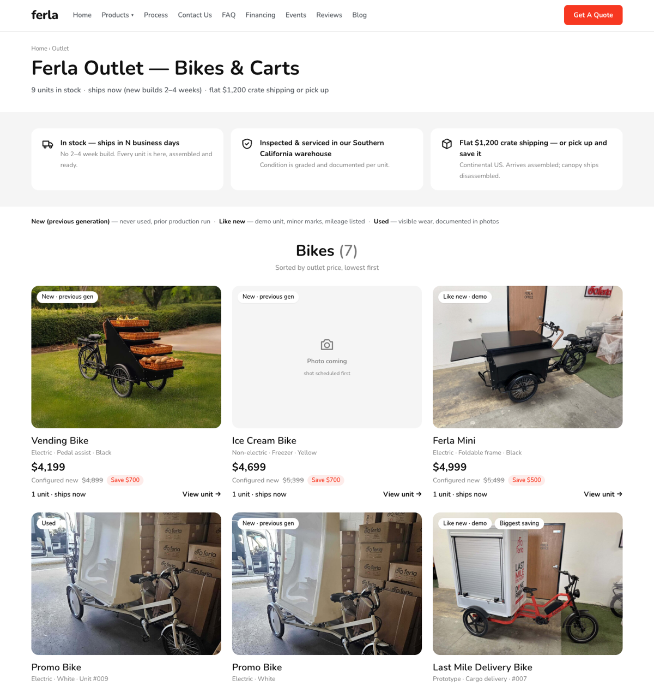
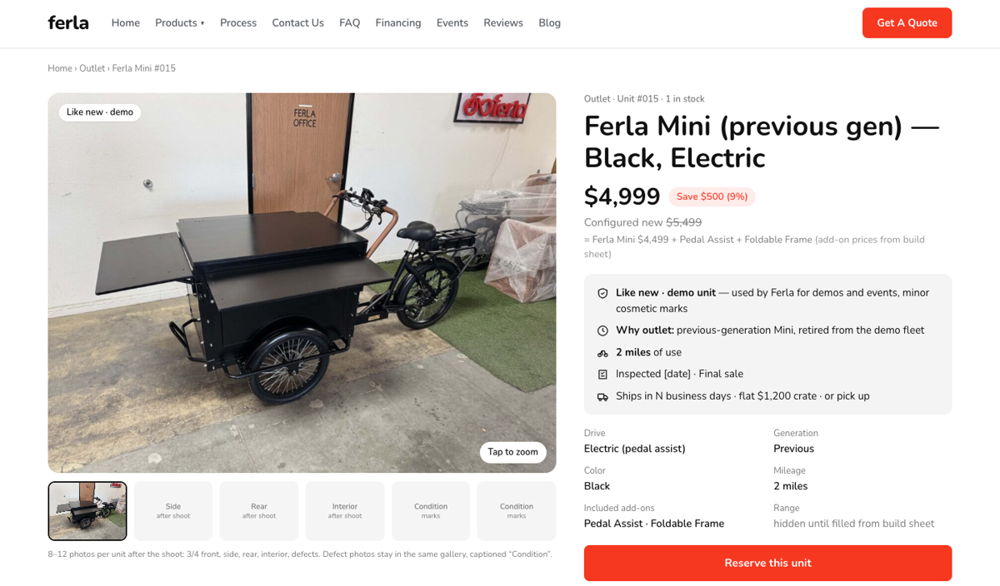
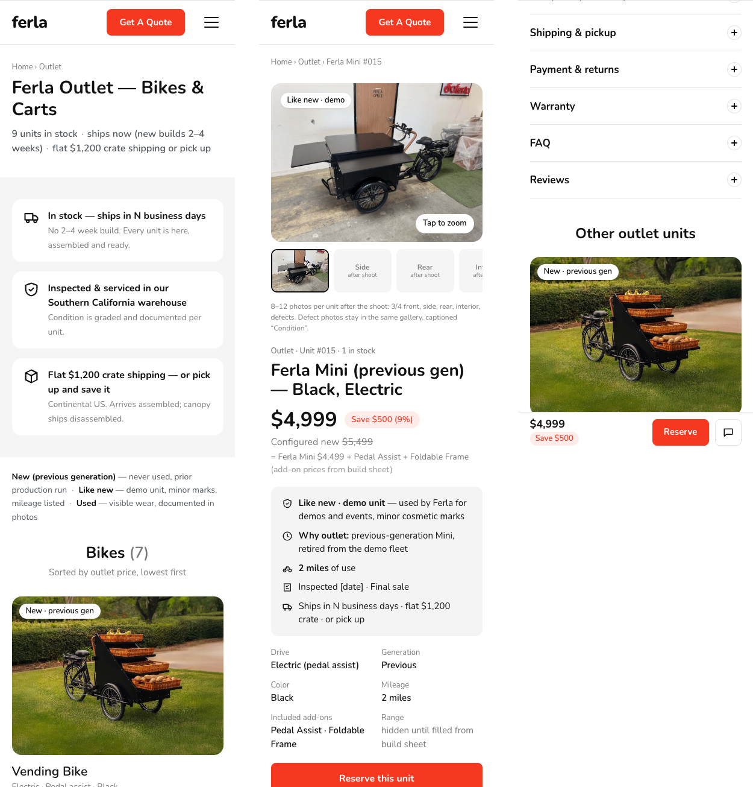

<title>Ferla Outlet Proposal</title>
<link rel="preconnect" href="https://fonts.googleapis.com"><link rel="preconnect" href="https://fonts.gstatic.com" crossorigin><link href="https://fonts.googleapis.com/css2?family=Nunito:wght@400;600;700;800&display=swap" rel="stylesheet">

<style>
:root{--bg:#ffffff;--ink:#1f2328;--ink-2:#59636e;--ink-3:#6e7781;--panel:#f6f8fa;--line:#d0d7de;--brand:#F73821;--code:#f6f8fa;--font:-apple-system,BlinkMacSystemFont,"Segoe UI","Noto Sans",Helvetica,Arial,sans-serif;--mono:ui-monospace,SFMono-Regular,Menlo,Consolas,monospace}
*{box-sizing:border-box}
html{background:#fff}
body{margin:0;background:#fff;color:var(--ink);font-family:var(--font);font-size:16px;line-height:1.6;-webkit-font-smoothing:antialiased}
.doc{max-width:1500px;margin:0 auto;padding-block:40px 80px;padding-inline:clamp(16px,3vw,48px)}
h1{font-size:2em;line-height:1.25;margin:0 0 16px;padding-bottom:.3em;border-bottom:1px solid var(--line)}
h2{font-size:1.5em;line-height:1.25;margin:40px 0 16px;padding-bottom:.3em;border-bottom:1px solid var(--line)}
h3{font-size:1.2em;margin:28px 0 12px}
p{margin:0 0 16px}
ul,ol{margin:0 0 16px;padding-left:2em} li{margin:4px 0}
strong{font-weight:600}
.tw{overflow-x:auto;margin:0 0 20px}
table{border-collapse:collapse;width:100%;font-size:15px;min-width:560px}
th,td{padding:8px 13px;border:1px solid var(--line);vertical-align:top;text-align:left}
th{background:var(--panel);font-weight:600}
tr:nth-child(even) td{background:#f9fafb}
code{font-family:var(--mono);font-size:.9em;background:var(--code);padding:1px 5px;border-radius:5px}
blockquote{margin:0 0 16px;padding:0 1em;border-left:4px solid var(--line);color:var(--ink-2)}
hr{border:0;border-top:1px solid var(--line);margin:32px 0}
figure{margin:16px 0 28px}
figure img{max-width:100%;height:auto;border:1px solid var(--line);border-radius:6px;display:block}
figcaption{font-size:13px;color:var(--ink-3);margin-top:8px}
del,s{color:var(--ink-3)}
a{color:#0969da}
</style>
<main class="doc">
<h1>Ferla Outlet - реорганизация listing page и product page</h1>
<p>Предложение перед разработкой: структура страниц, UX, план внедрения.</p>
<p>К документу приложен кликабельный прототип страниц и скриншоты.</p>
<h2>0. Коротко - подход и главные выводы</h2>
<p>Outlet сегодня - 9 уникальных юнитов, которые лежат в WooCommerce как 9 обычных товаров: без атрибутов, SKU, short description и учета остатков. Предлагаю не редизайн, а: единая фотосъемка, структурированные данные в WooCommerce, перенос цены / скидки / состояния / CTA в первый экран.</p>
<div class="tw"><table>
<thead>
<tr>
<th>Что не так</th>
<th>Проверено на сайте</th>
<th>Решение</th>
</tr>
</thead>
<tbody>
<tr>
<td>Порядок на listing - WordPress default (дата добавления)</td>
<td>Bikes и carts вперемешку, like-new рядом с new</td>
<td>§1</td>
</tr>
<tr>
<td>Карточка не различает юниты</td>
<td>Фото + title + две цены одного размера. Ни condition, ни скидки, ни electric / non-electric</td>
<td>§1</td>
</tr>
<tr>
<td>Скидка не названа</td>
<td>Ни "Save $1,000", ни "-14%". Покупатель вычитает в уме</td>
<td>§1, §2</td>
</tr>
<tr>
<td>Цена на странице продукта проигрывает каталогу на главной</td>
<td>Mini - $4,999, при "Starts At $4,499"; Vending Black - $4,199 при $3,499; X Wood $8,999 при $6,499 (судя по всему, это base + add-ons, но страница этого не говорит)</td>
<td>§2, §6</td>
</tr>
<tr>
<td>Condition - свободный текст</td>
<td>5 написаний для трех реальных состояний; schema.org отдает NewCondition даже на "Like New"</td>
<td>§2, §3</td>
</tr>
<tr>
<td>Product page: CTA ("Add to cart")</td>
<td>Кнопка стоит внизу на desktop и mobile; объем описания отличается в 100 раз - от 5 до 500 слов</td>
<td>§2</td>
</tr>
<tr>
<td>Фото - главный разрыв с брендом</td>
<td>5 разных пропорций в 9 карточках; склад, коробки, фургон; AI-картинка вместо Ice Cream (Yellow); один и тот же кадр у двух Promo Bike</td>
<td>§3, §5</td>
</tr>
<tr>
<td>На PDP нет фактов, снимающих риск покупки</td>
<td>Только "Shipping and Taxes not included". Нет про crate ($1,200), final sale, warranty, "в наличии"</td>
<td>§2</td>
</tr>
</tbody>
</table></div>
<p><strong>Три решения нужны до макетов</strong>:</p>
<ol>
<li><strong>Цена трех юнитов выше нового base.</strong> Дефолт: Like new / Used - ниже текущего "Starts At" модели; New (previous generation) - ниже новой.</li>
<li><strong>Модель CTA.</strong> По FAQ сайта заказ идет через Get a Quote или по телефону, а на странице продукта "Add to cart".</li>
<li><strong>Где стоят юниты, pickup, warranty.</strong> Footer - Gardena, FAQ - "visitors to our location in Azusa". Дефолт: pickup разрешен (экономит покупателю $1,200 - больше, чем скидка), warranty задается по грейду.</li>
</ol>
<h2>1. Предлагаемая структура Outlet listing page</h2>
<p>Что остается: header, footer, 3-колоночная сетка, скругленные карточки, механика WooCommerce. Редизайн - это новый loop item и новый archive template, а не пересборка всего сайта.</p>
<h3>Секции сверху вниз</h3>
<div class="tw"><table>
<thead>
<tr>
<th>#</th>
<th>Секция</th>
<th>Что</th>
<th>Зачем</th>
</tr>
</thead>
<tbody>
<tr>
<td>1</td>
<td>H1-блок</td>
<td>H1 "Ferla Outlet - Bikes &amp; Carts"; под ним строка "9 units in stock / ships now (new builds 2-4 weeks) / flat $1,200 crate shipping or pick up". Белый фон вместо черной полосы</td>
<td>Это единственный темный блок в верхней части сайта. Строка с count дает карту страницы: на mobile 9 карточек - это ≈4,300 px</td>
</tr>
<tr>
<td>2</td>
<td>"How Outlet works"</td>
<td>"In stock - ships in N business days" / "Inspected and serviced in our Southern California warehouse" / "Flat $1,200 crate shipping - or pick up and save it" / плитка warranty (где есть)</td>
<td>Немедленная доступность - главный USP outlet, который нигде не указан</td>
</tr>
<tr>
<td>3</td>
<td>Condition</td>
<td>Одна строка: "New (previous generation) - never used, prior production run" / "Like new - demo unit, minor marks, mileage listed" / "Used - visible wear, documented in photos"</td>
<td>Не chips и не tooltips: chips выглядят как фильтр, tooltips не работают на mobile</td>
</tr>
<tr>
<td>4</td>
<td>Grid <strong>Bikes (7)</strong></td>
<td>Centered H2 в стиле "Why Ferla X?", 3 колонки, карточки 4:3</td>
<td>Тип (bike или cart) - первое решение покупателя</td>
</tr>
<tr>
<td>5</td>
<td>Grid <strong>Carts (2)</strong></td>
<td>То же</td>
<td>-</td>
</tr>
<tr>
<td>6</td>
<td>Lifestyle-band</td>
<td>Переиспользуем financing блок как на /ferla-x: "Need a different configuration?" + "Build new in 3D" + "Talk to sales".</td>
<td>Ловим тех, кому не подошел ни один из 9</td>
</tr>
<tr>
<td>7</td>
<td>"Recently sold"</td>
<td>До 4 карточек: badge "Sold", без цены, 60% opacity, 30 дней</td>
<td>Social proof: юниты реально продаются</td>
</tr>
<tr>
<td>8</td>
<td>Buying guide: accordion, collapsed</td>
<td>Текущая статья ужата</td>
<td>URL /outlet сохраняет SEO-ценность (§5)</td>
</tr>
</tbody>
</table></div>
<p>Reviews здесь не ставим.</p>
<h3>Карточка товара</h3>
<div class="tw"><table>
<thead>
<tr>
<th>#</th>
<th>Элемент</th>
<th>Содержание</th>
<th>Визуальный вес</th>
</tr>
</thead>
<tbody>
<tr>
<td>1</td>
<td>Фото 4:3, фон #F5F5F5, радиус 16px; badge condition в левом верхнем углу</td>
<td>Белая pill, текст #111, 12-13px, sentence case - не красная, не uppercase</td>
<td>Доминирует, ~70% карточки</td>
</tr>
<tr>
<td>2</td>
<td>Model name</td>
<td>"Ferla Mini", "Grande Cart" - одна строка</td>
<td>20px / 600</td>
</tr>
<tr>
<td>3</td>
<td>Spec line, ~40 символов</td>
<td>"Electric / Foldable frame / Black"</td>
<td>14px, #7A7A7A</td>
</tr>
<tr>
<td>4</td>
<td><strong>Outlet Price</strong></td>
<td>"$4,999" без подчеркивания</td>
<td>22-24px / 700, #111 - самый тяжелый текст карточки</td>
</tr>
<tr>
<td>5</td>
<td><strong>Original Price + Discount</strong></td>
<td>"Configured new ~~$5,499~~" + "Save $500" (фон #fdecea, текст #F93922)</td>
<td>14-15px; chip 13px / 600</td>
</tr>
<tr>
<td>6</td>
<td>Availability + link</td>
<td>"1 unit / ships now" + text-link "View unit -&gt;"</td>
<td>15px / 600</td>
</tr>
</tbody>
</table></div><figure><figcaption>Прототип: listing page, desktop</figcaption></figure>
<p>Три вопроса покупателя: <em>какие модели</em> - group header + model name; <em>сколько стоят</em> - bold Outlet Price + chip "Save"; <em>чем отличаются</em> - badge condition + spec line. Больше в карточке ничего не нужно.</p>
<p><strong>Убрано из карточки:</strong> скрытая надпись "Available" (сидит в каждой из карточек, информации не несет); unit number из заголовка ("#008" etc.); конфигурация из title ("Base Pkg + No Freezer + Caster Wheels" -&gt; в атрибуты); подчеркивание цены; H2 на title (-&gt; H3).</p>
<p><strong>Фото 4:3, а не квадрат:</strong> текущие карточки 340×265 уже почти 4:3, телефон снимает 4:3 нативно, а байк - длинный объект: квадрат режет переднее колесо или уменьшает байк до ~60% плитки.</p>
<h3>Порядок и группировка</h3>
<p><strong>Правило: In stock -&gt; тип (Bikes, затем Carts) -&gt; Outlet Price по возрастанию.</strong> Condition - badge, а не ключ сортировки; Reserved (deposit hold, §6 п.7) после In stock; Sold - в конец.</p>
<div class="tw"><table>
<thead>
<tr>
<th>#</th>
<th>Группа / юнит</th>
<th>Condition</th>
<th>Outlet</th>
<th>Regular сегодня</th>
<th>Save</th>
</tr>
</thead>
<tbody>
<tr>
<td>1</td>
<td><strong>Bikes</strong> - Vending Bike (Black) / Electric</td>
<td>New / previous gen</td>
<td>$4,199</td>
<td>$4,899</td>
<td>$700</td>
</tr>
<tr>
<td>2</td>
<td>Ice Cream Bike (Yellow) / Non-electric / Freezer</td>
<td>New / previous gen</td>
<td>$4,699</td>
<td>$5,399</td>
<td>$700</td>
</tr>
<tr>
<td>3</td>
<td>Ferla Mini / Electric / Foldable frame / #015</td>
<td>Like new / 2 mi</td>
<td>$4,999</td>
<td>$5,499</td>
<td>$500</td>
</tr>
<tr>
<td>4</td>
<td>Promo Bike (White) / Electric / #009</td>
<td>Used</td>
<td>$5,399</td>
<td>$6,399</td>
<td>$1,000</td>
</tr>
<tr>
<td>5</td>
<td>Promo Bike (White) / Electric</td>
<td>New / previous gen</td>
<td>$5,799</td>
<td>$6,799</td>
<td>$1,000</td>
</tr>
<tr>
<td>6</td>
<td>Last Mile Delivery Bike / Prototype / #007</td>
<td>Like new</td>
<td>$8,399</td>
<td>$10,399</td>
<td>$2,000</td>
</tr>
<tr>
<td>7</td>
<td>Ferla X (Wood) / Electric / Freezer</td>
<td>New / previous gen</td>
<td>$8,999</td>
<td>$9,999</td>
<td>$1,000</td>
</tr>
<tr>
<td>8</td>
<td><strong>Carts</strong> - Grande Cart (White) / Caster wheels</td>
<td>New (поколение уточнить)</td>
<td>$4,799</td>
<td>$5,799</td>
<td>$1,000</td>
</tr>
<tr>
<td>9</td>
<td>Metal Cart / Sink / Cash drawer / #008</td>
<td>Like new</td>
<td>$6,399</td>
<td>$7,399</td>
<td>$1,000</td>
</tr>
</tbody>
</table></div>
<h3>Sorting / filtering - решение</h3>
<p>На 9 SKU не нужны UI sort / filter. Порядок пока автоматический. После &gt;12 юнитов - sort dropdown (price по возрастанию по умолчанию / по убыванию / biggest saving); &gt;20 - плашки-фильтры над сеткой (Type / Condition / Electric) и count "24 units"; &gt;40 - sidebar и "load more" по 12. Атрибуты заведены, каждый шаг - настройка виджета.</p>
<h3>Mobile (390px)</h3>
<div class="tw"><table>
<thead>
<tr>
<th>Блок</th>
<th>Поведение</th>
</tr>
</thead>
<tbody>
<tr>
<td>H1 + count-строка</td>
<td>Строка переносится на две; это первое, что видно после header</td>
</tr>
<tr>
<td>3 icon-tile</td>
<td>В один столбец, по одной строке текста на плитку</td>
</tr>
<tr>
<td>Condition</td>
<td>Одна строка текста с переносом, без интерактива</td>
</tr>
<tr>
<td>Grid</td>
<td>1 колонка, карточка целиком; без кнопки</td>
</tr>
<tr>
<td>Lifestyle-band</td>
<td>Две кнопки full-width друг под другом</td>
</tr>
<tr>
<td>Recently sold</td>
<td>Горизонтальный scroll</td>
</tr>
<tr>
<td>Buying guide</td>
<td>Collapsed по умолчанию</td>
</tr>
</tbody>
</table></div>
<h3>Правила стиля Ferla:</h3>
<ul>
<li>Шрифт VisbyRoundCF, sentence case; белый фон, текст #111, вторичный #7A7A7A, панели #F5F5F5 с чередованием белый -&gt; серый -&gt; белый.</li>
<li>Радиусы: карточки 16px, кнопки 8px, pills 999px; контейнер и боковые отступы - те же переменные темы.</li>
<li>Красный #F73821 (hover #DB2C16) - только одна primary CTA в viewport; secondary - белая; бейджи - белые pill с текстом.</li>
<li>Cуществующие паттерны: 3 icon-USP, centered H2, Nested Accordion, "Explore Other Configurations", lifestyle-band с затемнением.</li>
<li>Не используем: uppercase, черные боксы и кнопки, цветные бейджи.</li>
</ul>
<h2>2. Предлагаемая структура Outlet product page</h2>
<p>Две колонки на белом: слева 60% галерея, справа 40% sticky buy column. Outlet-юнит - один SKU без вариантов; "варианты" - это cross-sells "Complete your setup" и "Ask about this unit".</p>
<h3>Верхний блок</h3>
<div class="tw"><table>
<thead>
<tr>
<th>#</th>
<th>Элемент</th>
<th>Содержание</th>
<th>Визуальный вес</th>
</tr>
</thead>
<tbody>
<tr>
<td>1</td>
<td><strong>Product</strong></td>
<td>Eyebrow "Outlet / Unit #015 / 1 in stock" + H1 "Ferla Mini (previous gen) - Black, Electric" (несколько слов). Title: Ferla {Model} ({generation}) - {Color / Drive / Key add-ons} - Outlet #NNN</td>
<td>H1 32-44px / 700; eyebrow 13px, #7A7A7A</td>
</tr>
<tr>
<td>2</td>
<td><strong>Images</strong></td>
<td>Hero 4:3 + thumbnail, swipe на mobile; фото дефектов в той же галерее с подписью "Condition". Стандартный Product Images виджет вместо пары Image + Gallery - убирает дубль фото и вертикальную простыню</td>
<td>8-12 фото, hero ~100 KB WebP</td>
</tr>
<tr>
<td>3</td>
<td><strong>Outlet Price</strong></td>
<td>"$4,999"</td>
<td>32-36px / 700, #111 - самый тяжелый элемент колонки</td>
</tr>
<tr>
<td>4</td>
<td><strong>Original Price</strong></td>
<td>На странице - "Configured new ~~$5,499~~" + строка-разбивка "= Ferla Mini $4,499 + Pedal Assist + Foldable Frame". Показывается при подтвержденном якоре, иначе - "Compare: new Ferla Mini from $4,499"</td>
<td>16px, #7A7A7A, strikethrough</td>
</tr>
<tr>
<td>5</td>
<td><strong>Discount</strong></td>
<td>Chip "Save $500 (9%)" - доллары первичны</td>
<td>Pill #fdecea / #F93922, 13-14px / 600</td>
</tr>
<tr>
<td>6</td>
<td><strong>Condition / Outlet info</strong></td>
<td>Панель #F5F5F5, радиус 12px: why outlet (demo / previous generation / prototype) / Inspected / Final sale. + "Ships in N business days / flat $1,200 crate / or pick up"</td>
<td>15px, 50 - 100 слов</td>
</tr>
<tr>
<td>7</td>
<td><strong>Основные характеристики</strong></td>
<td>Сетка label / value: Drive / Range / Color / Add-ons / Generation / Mileage / hours.</td>
<td>13px label / 15px value</td>
</tr>
<tr>
<td>8</td>
<td><strong>CTA</strong></td>
<td>Пара кнопок на всю ширину колонки: красная primary + белая secondary. Дефолт: primary "Buy now" (checkout, где $1,200 и tax уже посчитаны), secondary "Reserve / Ask about this unit" (заявка с депозитом или звонок). Если через корзину проходят единицы заказов, меняем их местами. Под кнопками: "or call +1 (213) 291-9070" и trust line "Flat $1,200 crate shipping / Arrives assembled / Final sale / Financing via Click Lease -&gt;"</td>
<td>Один красный элемент</td>
</tr>
</tbody>
</table></div><figure><figcaption>Прототип: product page, desktop</figcaption></figure><figure><figcaption>Прототип: mobile - listing, product page, sticky bar</figcaption></figure>
<h3>Нижние секции</h3>
<p>Все ниже trust line - Nested Accordion; на desktop первые две секции открыты.</p>
<div class="tw"><table>
<thead>
<tr>
<th>Секция</th>
<th>Содержимое</th>
<th>Лимит</th>
</tr>
</thead>
<tbody>
<tr>
<td>Overview</td>
<td>Один абзац про этот юнит (что, почему в outlet, кому) + 3 "Best for"</td>
<td>100 слов + 3 буллета</td>
</tr>
<tr>
<td>Condition report</td>
<td>Чек-лист frame / motor &amp; battery / brakes / tires / electrics / body / doors &amp; locks / sink &amp; tanks со статусом OK / note, дефекты со ссылками на фото, дата инспекции</td>
<td>~100 слов + список</td>
</tr>
<tr>
<td>What's included</td>
<td>Base, add-ons, battery + charger, keys. Заменяет "Included Add-Ons" grid</td>
<td>~10 буллетов</td>
</tr>
<tr>
<td>Specifications</td>
<td>Таблица из атрибутов: dimensions, weight, load, motor, battery, range, tank capacity</td>
<td>~10 строк</td>
</tr>
<tr>
<td>Compare with new</td>
<td>3 колонки: этот юнит / новая base-модель / новая в той же конфигурации - price, condition, lead time ("ships now" vs "2-4 weeks"), warranty</td>
<td>~5 строк</td>
</tr>
<tr>
<td>Complete your setup</td>
<td>Cross-sells по ценам каталога: Standard Canopy $200, Solar Package $1,000, Freezer 70L $749 / 230L $1,149, Sink $129 + Water pump $189, Battery $599 (Mini / Ice Cream / Vending) или $799 (Ferla X)</td>
<td>3-4 карточки</td>
</tr>
<tr>
<td>Shipping &amp; pickup / Payment &amp; returns / Warranty</td>
<td>Глобальные шаблоны: $1,200 per crate, arrives assembled, canopy disassembled, ships in N days, pickup; способы оплаты (card / ACH / Click Lease / PO - §6); CA sales tax при доставке или pickup в Калифорнии, tax-exempt - сертификат; "Outlet sales are final"; warranty текст</td>
<td>~50 слов каждая</td>
</tr>
<tr>
<td>FAQ</td>
<td>Несколько Q&amp;A: что значит previous generation, можно ли посмотреть вживую, можно ли добавить опции, повреждения</td>
<td>10 - 20 слов на ответ</td>
</tr>
<tr>
<td>Reviews + Other outlet units</td>
<td>Site Reviews по родительской модели; 3 карточки того же компонента</td>
<td>-</td>
</tr>
</tbody>
</table></div>
<p>Итого описания на юнит не 5 - 500 слов, а ~250 (появляется шаблон).</p>
<p><strong>Убрано с PDP:</strong> SEO-эссе из H3; quantity selector; форма "Talk To Sales" с "How did you hear about us?" (-&gt; popup "Ask about this unit" с pre-filled unit и чекбоксами "financing quote" / "inspect in person"); generic "Included Add-Ons" grid (дублирует буллеты); дубль featured image. Блок "ANALYZE THIS PAGE WITH AI" (5 внешних ссылок над футером) - если это эксперимент по AI-visibility - переносим ниже CTA.</p>
<div class="tw"><table>
<thead>
<tr>
<th>Живет один раз на listing (и линкуется с каждой PDP)</th>
<th>На каждой PDP</th>
</tr>
</thead>
<tbody>
<tr>
<td>Что такое Ferla Outlet; определения трех грейдов; warranty terms; final-sale policy; shipping $1,200 / assembled / pickup / international on request; financing; общий FAQ; архив Sold</td>
<td>Grade + причина попадания в outlet + mileage / hours; дефекты с фото и датой инспекции; ships-in days; исключения по warranty для этого юнита; состояние Sold</td>
</tr>
</tbody>
</table></div>
<h3>Грейды и правило якоря</h3>
<p>Три грейда вместо пяти написаний; поколение и "прототип" - отдельные поля, а не грейды.</p>
<div class="tw"><table>
<thead>
<tr>
<th>Grade</th>
<th>Badge</th>
<th>Определение для покупателя</th>
<th>Обязательные поля</th>
<th>Юниты сегодня</th>
</tr>
</thead>
<tbody>
<tr>
<td>New</td>
<td>"New" / "New / previous gen"</td>
<td>Never used; поколение указано явно</td>
<td>Generation; "what differs from current"</td>
<td>Vending Black, Ice Cream Yellow, Promo White, X Wood; Grande Cart White (поколение уточнить)</td>
</tr>
<tr>
<td>Like new</td>
<td>"Like new / demo"</td>
<td>Used by Ferla for demos, events or photos; inspected and serviced; minor cosmetic marks</td>
<td>Mileage / hours; marks + фото</td>
<td>Mini #015, Metal Cart #008, Last Mile #007 (+ флаг Prototype)</td>
</tr>
<tr>
<td>Used</td>
<td>"Used"</td>
<td>Previously operated; inspected and serviced; wear documented</td>
<td>Mileage / hours; wear-фото</td>
<td>Promo #009</td>
</tr>
</tbody>
</table></div>
<p><strong>Правило якоря.</strong> Original Price - зачеркнутой только если она воспроизводима как "текущий Starts At + текущие цены add-ons за эту конфигурацию". Иначе - Outlet Price, "Compare: new Ferla X from $6,499" и причина разницы (freezer, pedal assist, wood finish). Слово на странице - "Configured new", а не "Original price": strikethrough - это заявление о прежней цене, за которой должен стоять документ. Для прототипа #007 strikethrough не ставим - максимум "Comparable new build from $X".</p>
<h2>3. Что убрать / изменить на текущих страницах</h2>
<div class="tw"><table>
<thead>
<tr>
<th>Элемент</th>
<th>Сейчас</th>
<th>Действие</th>
<th>Почему</th>
</tr>
</thead>
<tbody>
<tr>
<td>Порядок юнитов</td>
<td>WordPress default (date desc); bikes и carts вперемешку</td>
<td>Query "stock -&gt; type -&gt; price asc"</td>
<td>Порядок должен читаться как прайс-лист, а не как лог загрузок</td>
</tr>
<tr>
<td>H1-полоса</td>
<td>Почти черная (#181818) с H1 "Outlet Bikes"</td>
<td>Белый блок, H1 + count-строка</td>
<td>Единственный темный блок в верхней части страниц</td>
</tr>
<tr>
<td>"Available"</td>
<td>Скрытый статус в DOM</td>
<td>Удалить, вместо него badge condition + "1 unit"</td>
<td>Ноль информации</td>
</tr>
<tr>
<td>Цены в карточке</td>
<td>Обе 20px серые, outlet подчеркнута</td>
<td>Outlet 22-24px / 700 #111; "Configured new" 15px strikethrough; плашка "Save $X"</td>
<td>Покупатель не должен вычитать; новая цена - самый заметный текст</td>
</tr>
<tr>
<td>Title</td>
<td>"Grande Cart (White) - Base Pkg + No Freezer + Caster Wheels" - 3 строки</td>
<td>Правило: Ferla {Model} ({gen}) - {Color / Drive / Add-ons} - Outlet #NNN; конфигурация -&gt; атрибуты; "No Freezer" -&gt; Not included</td>
<td>Одна строка, ровная baseline по ряду</td>
</tr>
<tr>
<td>Фото</td>
<td>Разные пропорции; склад / коробки / фургон; заглушка у Ice Cream Bike (Yellow); один кадр у Promo #009 и Promo White; featured дублируется в галерее</td>
<td>Для каждого юнита один фронтальный кадр (три четверти), кроп 4:3 (800×600); Ice Cream Yellow - телефонная съемка у стены, затем фотосессия</td>
<td>Единая фото-рецептура; плейсхолдер "ChatGPT-image" подрывает доверие ко всей сетке</td>
</tr>
<tr>
<td>SEO-статья</td>
<td>~1000 слов; на mobile 50% высоты</td>
<td>Сollapsed accordion; рерайт в Ferla-specific + FAQ</td>
<td>Ценовые диапазоны ($800-$6,000, "40-70% savings") противоречат реальным $4,199-$8,999 и 9-19%</td>
</tr>
<tr>
<td>H1 / <title></td>
<td>"Outlet Bikes"; title обещает "Coffee Cart" и "Cargo Bikes"</td>
<td>H1 "Ferla Outlet - Bikes &amp; Carts"; Coffee Cart из title убрать</td>
<td>2 из 9 - carts; coffee cart в outlet нет</td>
</tr>
<tr>
<td>PDP CTA</td>
<td>Черная, ниже первого экрана; quantity перед ней</td>
<td>Пара full-width; mobile sticky bar; quantity скрыт</td>
<td>Черная кнопка - не паттерн Ferla; CTA после эссе не работает</td>
</tr>
<tr>
<td>Описание PDP</td>
<td>~520 слов (#015), ~370 (#008); 4-5 слов (#007, #009, Promo White)</td>
<td>Шаблон ~250 слов; short description (сейчас пустая)</td>
<td>Непоследовательность</td>
</tr>
<tr>
<td>"Shipping and Taxes not included"</td>
<td>Единственная политика без цифры; $1,200 узнается только на checkout (10-30% цены юнита)</td>
<td>Trust line "Flat $1,200 crate shipping / Arrives assembled / Final sale / or pick up"</td>
<td>Известная цифра пугает меньше, чем неизвестная</td>
</tr>
<tr>
<td>Галерея</td>
<td>Все изображения столбиком 550×400, featured повторяется</td>
<td>Product Images widget: hero + thumbnails + lightbox</td>
<td>Один виджет решает дубль и простыню</td>
</tr>
<tr>
<td>"Included Add-Ons" grid</td>
<td>Generic карточки с основного каталога, дублируют буллеты</td>
<td>Секция What's included / Not included</td>
<td>Убирает дубль и generic-текст</td>
</tr>
<tr>
<td>Condition</td>
<td>Свободный текст, 5 написаний</td>
<td>Атрибут condition, 3 значения + поля generation / prototype</td>
<td>Нет badge, порядка, schema</td>
</tr>
<tr>
<td>Stock</td>
<td>Не управляется; sold individually выключен на всех</td>
<td>Manage stock, qty 1, sold individually; Sold вместо удаления</td>
<td>Юнит нельзя продать дважды; проданный не должен исчезать вместе с indexed URL</td>
</tr>
<tr>
<td>Schema</td>
<td>Два Product entity (WooCommerce + Rank Math), оба NewCondition</td>
<td>Один entity; itemCondition из грейда; shippingDetails $1,200; MerchantReturnNotPermitted</td>
<td>Google показывает condition и shipping вместо голой цены</td>
</tr>
<tr>
<td>Talk To Sales</td>
<td>Collapsed accordion без product context</td>
<td>Popup с unit / SKU / price в hidden fields; телефон рядом с CTA</td>
<td>Лид без указания юнита</td>
</tr>
<tr>
<td>SEO titles PDP</td>
<td>Metal Cart: "Pre-owned metal vending cart for sale &gt;&gt; Explore used metal cart ..."; остальные "<name> - Ferla Bikes"</td>
<td>Шаблон "Ferla {Model} Outlet #NNN - {Condition} | Ferla Bikes" в Rank Math</td>
<td>Один шаблон вместо ручных title</td>
</tr>
<tr>
<td>Нет warranty / lead time / shipping / final sale / financing</td>
<td>Ни на одной из 9 PDP</td>
<td>Info box + глобальные шаблоны (§2)</td>
<td>Это и есть "Condition / Outlet information" из ТЗ</td>
</tr>
<tr>
<td>Alt text / SKU / short description</td>
<td>Пусто на всех 9</td>
<td>Заполнить по шаблону</td>
<td>Доступность, feeds, GA4 item_id</td>
</tr>
<tr>
<td>FAQ vs footer</td>
<td>FAQ: "visitors to our location in Azusa"; footer и schema: 1100 W 135th St, Gardena</td>
<td>Привести к одному адресу после ответа CEO</td>
<td>Покупатель проверит адрес</td>
</tr>
</tbody>
</table></div>
<h2>4. Дополнительные UX улучшения</h2>
<p><strong>Quick wins (без глобальных изменений шаблона).</strong></p>
<ol>
<li>Stock qty 1 + sold individually на всех товарах; проданный юнит -&gt; Sold, не удаление (сохранение impressions проданных URL в Search Console).</li>
<li>Плашка "Save $X" через shortcode в каталоге и на странице продукта. Listing -&gt; PDP CTR растет, сделка видна без арифметики.</li>
<li>Пересортировка через menu_order (type -&gt; price) (scroll depth до 9-й карточки).</li>
<li>Статья -&gt; collapsed accordion; фото-правила (высота страницы, bounce на /outlet).</li>
<li>Строка текстом в описании трех юнитов дороже нового base - "Configured new: $5,499 = Ferla Mini $4,499 + ..." ("почему дороже нового").</li>
<li>Trust line "Flat $1,200 crate shipping / Final sale / In stock" под ценой (гипотеза: меньше брошенных checkout из-за сюрприза доставкой; метрика: begin_checkout -&gt; purchase / заявка).</li>
<li>Baseline: snapshot GA4 и Clarity за 2-4 недели до релиза по воронке view_item_list -&gt; select_item -&gt; view_item -&gt; add_to_cart -&gt; begin_checkout -&gt; purchase плюс заявки. Без этого "после" не с чем сравнивать.</li>
</ol>
<p><strong>Основной релиз (§5).</strong></p>
<ol start="8">
<li>Шаблоны v2 со sticky column и mobile bar (гипотеза: CTA в первом экране поднимает PDP -&gt; действие; метрика: view_item -&gt; add_to_cart / заявка, клики sticky bar отдельным событием).</li>
<li>Condition report с фото дефектов и датой инспекции (время до продажи Like new / Used против New).</li>
<li>Popup "Ask about this unit" с pre-filled unit (метрика: лиды с item_id).</li>
<li>"Compare with new" (гипотеза: честный якорь снимает возражение "дороже нового"; метрика: exit с outlet PDP на main PDP той же модели).</li>
<li>"Complete your setup" (attach rate, AOV outlet-заказа).</li>
</ol>
<p><strong>Спрос и распродажа.</strong></p>
<ol start="13">
<li>Карточка "This model in stock now" на main PDP - рядом со строкой "Custom builds typically take 2-4 weeks", ссылкой на конкретный юнит: "Ferla Mini #015 / $4,999 / ships now".</li>
<li>Одно письмо / SMS по незакрытым quote-лидам той же модели (GoHighLevel).</li>
<li>Google Merchant Center free listings с itemCondition из нового атрибута.</li>
<li>Правило уценки: 30 дней без продажи - ревизия цены, 60 - шаг уценки. Цель: все 9 проданы к согласованной дате.</li>
<li>Pickup как оффер: "Pick up at our warehouse and save the $1,200 crate fee" - на плитке листинга и в info box, с таргетом на покупателей из LA.</li>
</ol>
<p><strong>После запуска.</strong></p>
<ol start="18">
<li>"Hold this unit - 48h, $500 deposit" (метрика: доля резервов -&gt; покупок).</li>
<li>Публичный чек-лист "Ferla outlet inspection" + PDF на юнит.</li>
<li>Per-unit monthly figure от Click Lease вместо общей строки.</li>
</ol>
<h2>5. Implementation на staging и запуск</h2>
<p><strong>День 0 - проверки "до":</strong> (1) число заказов через корзину против quote-лидов за 12 месяцев -&gt; модель CTA; (2) outlet-юнит через checkout на staging - начисляются ли $1,200 и tax (если корзина отдает $0 доставки, это утечка маржи); (3) Search Console: клики /outlet по "used cargo bike / coffee cart" -&gt; судьба статьи; (4) где физически стоят юниты; (5) baseline GA4 / Clarity.</p>
<div class="tw"><table>
<thead>
<tr>
<th>Этап</th>
<th>Содержание</th>
<th>Дни</th>
</tr>
</thead>
<tbody>
<tr>
<td>0</td>
<td>Backup, staging clone, Stripe test mode, отключить почту, "Discourage search engines", etc.</td>
<td>1</td>
</tr>
<tr>
<td>1</td>
<td>Модель данных, stock settings, child theme, shortcode для скидок, query hook, sold-individually, schema, filters, image 800×600</td>
<td>3</td>
</tr>
<tr>
<td>2</td>
<td>Listing: Outlet Card v2 + Archive v2 (дубликаты текущих шаблонов; старые - rollback)</td>
<td>2</td>
</tr>
<tr>
<td>3</td>
<td>PDP: Outlet Product v2 (текущий single-product template продолжает работать в основном каталоге)</td>
<td>3</td>
</tr>
<tr>
<td>4</td>
<td>Фото (обработка, WebP, alt, regenerate) * 9 юнитов</td>
<td>2</td>
</tr>
<tr>
<td>5</td>
<td>SEO: статья, titles, schema validation, sold-policy</td>
<td>1</td>
</tr>
<tr>
<td>6</td>
<td>Миграция на live: код через git / SFTP, шаблоны через Elementor Export / Import, данные через WooCommerce CSV "update existing"</td>
<td>1</td>
</tr>
<tr>
<td>7</td>
<td>Dark launch: шаблон на скрытой категории с одним клоном, реальный тест оплаты, переключение condition, regenerate CSS, очистка WP Rocket + Cloudflare, QA</td>
<td>1</td>
</tr>
<tr>
<td>8</td>
<td>GTM / GA4 / Clarity: события, отчеты</td>
<td>1</td>
</tr>
</tbody>
</table></div>
<p>Итого ~15 рабочих дней.</p>
<p><strong>Что нужно:</strong> build sheets / quotes по всем юнитам; warranty по грейду; решения из §6; доступы (админка, хостинг, репозиторий, Cloudways, Search Console, Cloudflare, etc.); емкость / габариты / вес по юнитам.</p>
<p><strong>KPI.</strong> На 9 единичных SKU A/B-тесты и недельные конверсии - шум, поэтому главные метрики: дни до продажи по юниту; лиды по юниту; sell-through к дате; listing -&gt; PDP CTR; Clarity. Прогнозы "+ x %" дать не могу.</p>
<h2>6. Решения, которые нужны от CEO</h2>
<ol>
<li><strong>Три юнита дороже нового base</strong> - X Wood ($8,999 vs new X $6,499 / Glacier $7,499), Mini #015 ($4,999 vs $4,499), Vending Black ($4,199 vs $3,499). Рекомендую: Like new / Used - ниже текущего "Starts At" модели; New (previous gen) - ниже той же конфигурации новой с разбивкой; минимальный разрыв между грейдами одной модели. Что не проходит - в "Ready to ship" на main PDP.</li>
<li><strong>Модель CTA и оплата.</strong> Рекомендую primary "Buy now" + secondary "Reserve / Ask about this unit"; если корзина не будет востребованной - наоборот. Способы оплаты: card, ACH / wire, Click Lease, PO?</li>
<li><strong>Warranty по грейду.</strong> Рекомендую: New - как на новую; Like new / Used - limited на motor / battery / electrics, cosmetics as-is; текст - от вас. На сайте warranty не нашел.</li>
<li><strong>Где стоят юниты и pickup.</strong> FAQ говорит Azusa, footer - Gardena. Рекомендую pickup разрешить: экономия $1,200 больше, чем скидка.</li>
<li><strong>Build sheets и #007.</strong> Есть ли build sheets / quotes по 9 юнитам? Для прототипа #007 - существовал ли $10,399 как реальная цена или quote? Если нет - продаем без strikethrough.</li>
<li><strong>Два Promo Bike</strong> - Used $5,399 и New $5,799 с одним кадром: это два физических юнита или одна карточка лишняя? Разрыв 7% между used и new - сам по себе вопрос к цене.</li>
<li><strong>Deposit hold и операционные дефолты.</strong> Рекомендую "Hold 48h, $500 deposit" - да; ships-in по умолчанию - 5 business days; дефект-чек-лист заполняет склад, sales только подтверждает.</li>
<li><strong>"$199/month".</strong> Одна и та же цифра стоит на Mini $4,499, Vending $3,499, Grande Cart $4,999, Ice Cream $4,999 и X $6,499 - она не масштабируется с ценой. Рекомендую запросить у Click Lease per-unit figures, а до этого показывать "Financing via Click Lease -&gt;" без суммы - и на outlet, и на основном сайте.</li>
<li><strong>"ANALYZE THIS PAGE WITH AI".</strong> Что это - эксперимент по AI-visibility? Переносим ниже футерного CTA или убираем с outlet?</li>
<li><strong>Canopy.</strong> Стандартный canopy входит в outlet-юниты или продается отдельно за $200? От этого зависит "What's included" на всех 9 PDP.</li>
</ol>
<hr />
<h2>Модель данных (заполнять в админке)</h2>
<div class="tw"><table>
<thead>
<tr>
<th>Поле</th>
<th>Значения</th>
<th>Использует</th>
</tr>
</thead>
<tbody>
<tr>
<td>Атрибут type</td>
<td>Bike / Cart</td>
<td>group header, порядок</td>
</tr>
<tr>
<td>Атрибут condition</td>
<td>New / Like new / Used</td>
<td>badge, info box, schema itemCondition</td>
</tr>
<tr>
<td>Атрибут drive</td>
<td>Electric / Non-electric</td>
<td>spec line, характеристики</td>
</tr>
<tr>
<td>Meta: unit number, generation (current / previous), prototype flag</td>
<td>текст / выбор</td>
<td>eyebrow, H1, badge, блок Prototype</td>
</tr>
<tr>
<td>Meta: mileage / hours, inspected on, ships in days</td>
<td>число / дата</td>
<td>info box, condition report</td>
</tr>
<tr>
<td>Meta: configured breakdown, anchor verified</td>
<td>текст / да-нет</td>
<td>Original Price показывается только при "да"</td>
</tr>
<tr>
<td>Meta: included / not included, reserved</td>
<td>списки / да-нет</td>
<td>What's included; Reserved после In stock</td>
</tr>
<tr>
<td>Статус</td>
<td>WooCommerce stock (in stock / sold) - без дублирующего атрибута</td>
<td>порядок, Sold-state, sticky bar</td>
</tr>
</tbody>
</table></div>
<h2>Процесс "новый юнит за 15 минут"</h2>
<p><strong>На складе:</strong> (1) номер из реестра, (2) odometer / hours и поколение, (3) included / not included, (4) дефекты по чек-листу, (5) фото на стандартном месте. <strong>Sales:</strong> build sheet.</p>
<p><strong>В WooCommerce:</strong> (1) title по конвенции и SKU OUT-MINI-015, (2) атрибуты и meta, (3) цены по правилу якоря, (4) stock 1, (5) фото без дубля featured, (6) cross-sells, (7) Rank Math title, (8) preview на mobile -&gt; publish -&gt; строка в shared sheet.</p>
<p><strong>При продаже:</strong> stock 0 + дата, юнит не удалять. <strong>Sold-state:</strong> карточка с badge 30 дней, PDP 90 дней (social proof, SEO), затем noindex + 301 на /outlet.</p>
<h2>Фотосессия</h2>
<p>Owner - warehouse lead, один день, один backdrop (чистая стена), одна высота камеры, 4:3. Shot list на юнит: 3/4 front (cargo box слева, saddle справа), side, rear, interior, defects - 6 кадров, ~15 минут на юнит. Первый - Ice Cream Yellow.</p>
<h2>О прототипе</h2>
<p>ferla_outlet_prototype.html - самодостаточный файл: переключатель Listing / Product page (Mini #015), адаптив (3 / 2 / 1 колонки), рабочие аккордеоны и sticky bar на mobile. Шрифт - Nunito как ближайшая свободная замена VisbyRoundCF; на сайте будет VisbyRoundCF. Фото - текущие складские, до съемки; Ice Cream Yellow показан плейсхолдером "Photo coming" вместо "https://ferlabikes.com/wp-content/uploads/2025/09/ChatGPT-Image-Oct-7-2025-08_28_09-PM.jpeg". Strikethrough "Configured new" в прототипе стоит на всех юнитах как целевое состояние после подтверждения build sheets.</p>
</main>